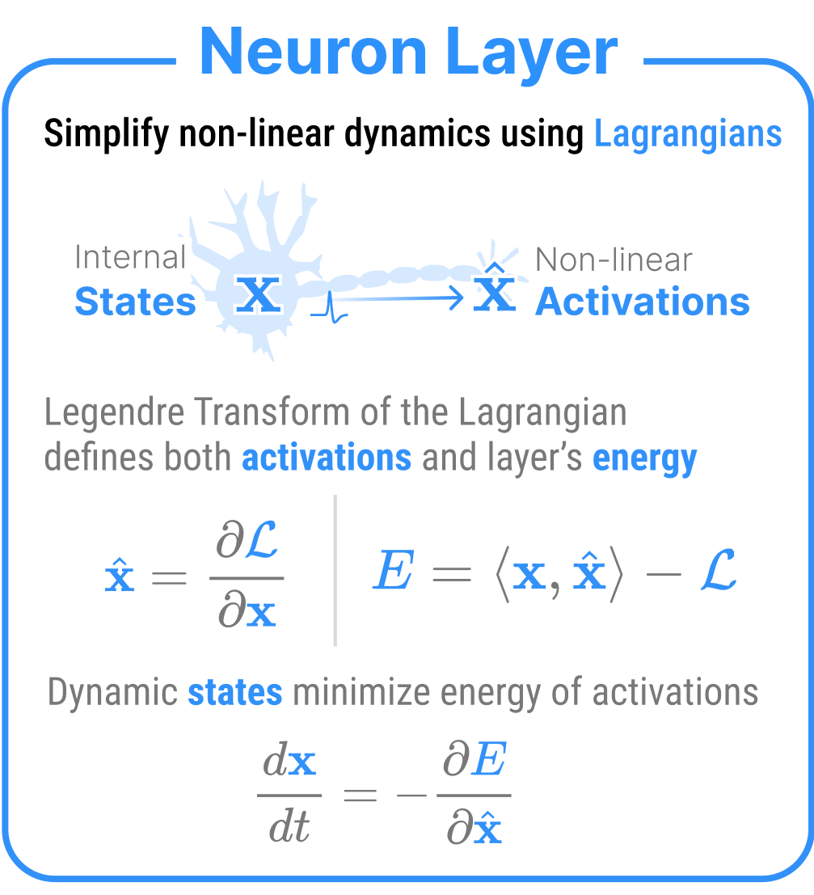
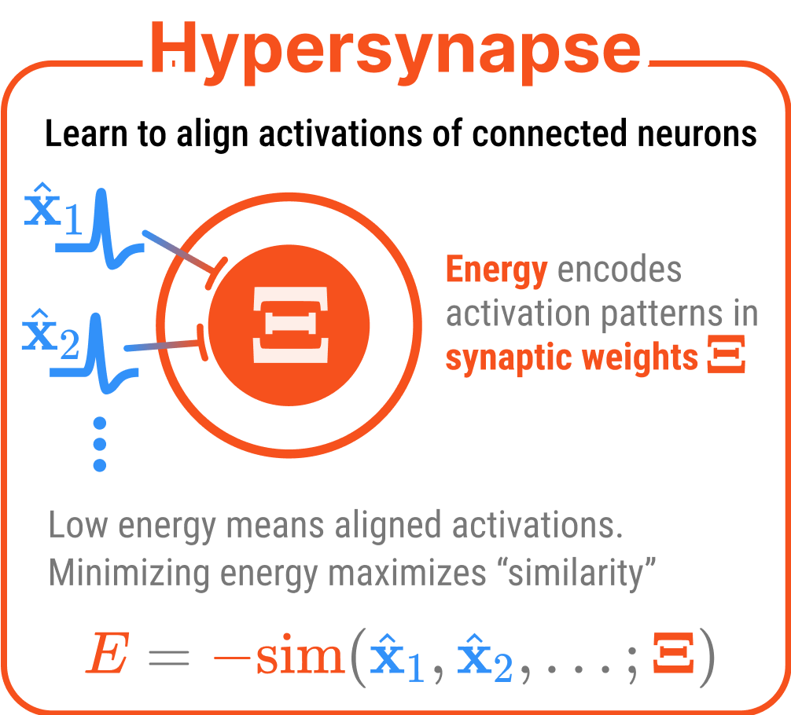
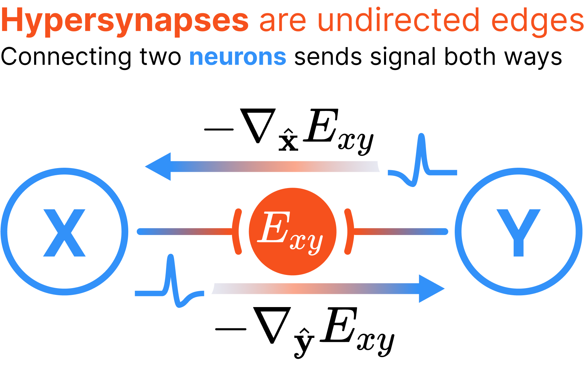
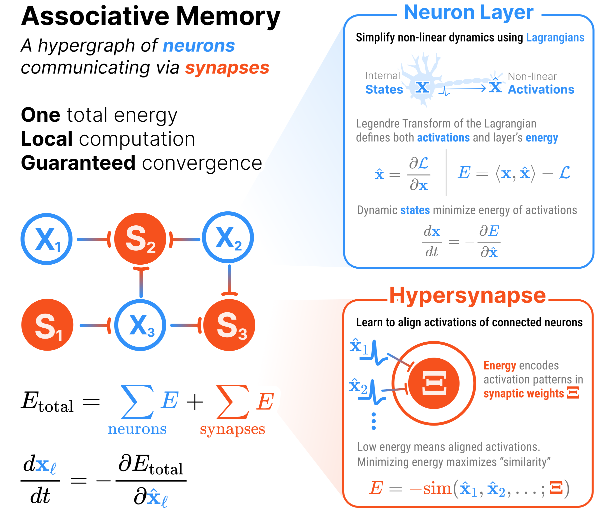

The building blocks of energy-based Associative Memory
We develop a modular energy perspective of Associative Memories where the energy of any model from this family can be decomposed into standardized components: neuron layers that encode dynamic variables, and hypersynapses that encode their interactions.
The total energy of the system is the sum of the individual component energies subtracted by the energies of all the layers and all the interactions between those layers.
In computer science terms, neurons and synapses form a hypergraph, where each neuron layer is a node and each hypersynapse is a hyperedge.
This framework of energy-based building blocks for memory not only clarifies how existing methods for building Associative Memories relate to each other (e.g., the Classical Hopfield Network [@hopfield1982neural, @hopfield1984Neurons], Dense Associative Memory [@krotov2016dense]), but it also provides a systematic language for designing new architectures (e.g., Energy Transformers [@hoover2024energy], Neuron-Astrocyte Networks [@kozachkov2023neuron]).
We begin by introducing the building blocks of Associative Memory: neurons and hypersynapses.
Neurons
Neurons turn Lagrangians into the dynamic building blocks of memory.
NoteTL;DR
A neuron is a fancy term to describe the dynamic (fast moving) variables in an associative memory.
Every neuron has an internal state \(\mathbf{x}\) that evolves over time and an activation \(\hat{\mathbf{x}}\) that affects the rest of the network.
In the complete hypergraph of Associative Memory, our neurons are the nodes while our hypersynapses are the hyperedges (since a synapse can connect more than two nodes, they cannot be regular “edges”).
A neuron is just a Lagrangian assigned to a tensor of data.

A neuron layer is a Lagrangian function on top of data, where the Lagrangian defines the activations of that neuron
A neuron layer (node of the Associative Memory) is a fancy term to describe the dynamic variables in AM. Each neuron layer has an internal state\(\mathbf{x}\) which evolves over time and an activation\(\hat{\mathbf{x}}\) that forwards a signal to the rest of the network. Think of neurons like the activation functions of standard neural networks, where \(\mathbf{x}\) are the pre-activations and \(\hat{\mathbf{x}}\) (the outputs) are the activations e.g., \(\hat{\mathbf{x}} = \texttt{ReLU}(\mathbf{x})\).
In order to define neuron layer’s energy, AMs employ two mathematical tools from physics: convex Lagrangian functions and the Legendre transform. For each neuron layer, we define a convex, scalar-valued Lagrangian \(\mathcal{L}_x(\mathbf{x})\). The Legendre transform \(\mathcal{T}\) of this Lagrangian produces the dual variable \(\hat{\mathbf{x}}\) (our activations) and the dual energy \(E_x(\hat{\mathbf{x}})\) (our new energy) as in:
where \(\langle \cdot, \cdot \rangle\) is the element-wise inner product. Because \(\mathcal{L}_x\) is convex, the Jacobian of the activations \(\frac{\partial \hat{\mathbf{x}}}{\partial \mathbf{x}} = \nabla^2 \mathcal{L}_x(\mathbf{x})\) (i.e., the Hessian of the Lagrangian) is positive definite.
TipNotational conventions
There are lots of named components inside the neuron layer. As a notational convention, each neuron layer is identified by a single letter (e.g., \(\mathsf{X}\) or \(\mathsf{Y}\)). We say a neuron layer \(\mathsf{X}\) has a internal state \(\mathbf{x} \in \hat{\mathcal{X}}\) and Lagrangian \(\mathcal{L}_x(\mathbf{x})\), alongside an activation \(\hat{\mathbf{x}} \in \hat{\mathcal{X}}\) and total energy \(E_x(\hat{\mathbf{x}})\) constrained through the Legendre transform of the Lagrangian. Meanwhile, neuron layer \(\mathsf{Y}\) has a internal state \(\mathbf{y} \in \mathcal{Y}\) and Lagrangian \(\mathcal{L}_y(\mathbf{y})\), alongside an activation \(\hat{\mathbf{y}} \in \hat{\mathcal{Y}}\) and total energy \(E_y(\hat{\mathbf{y}})\).
Because it is often nice to think of the activations as being a non-linear function of the internal states, we can also write \(\hat{\mathbf{x}} = \sigma_x(\mathbf{x})\), where \(\sigma_x(\cdot) := \nabla \mathcal{L}_x (\cdot)\).
The dual energy \(E_x(\hat{\mathbf{x}})\) has another nice property: its gradient equals the internal states. Thus, when we minimize the energy of our neurons (in the absence of any other signal), we observe exponential decay. This is nice to keep the dynamic behavior of our system bounded and well-behaved, especially for very large values of \(\mathbf{x}\).
Neuron layers represent dynamic variables that evolve during inference (i.e., memory retrieval/error correction)
Exported source
class NeuronLayer(eqx.Module):"""Neuron layers represent dynamic variables that evolve during inference (i.e., memory retrieval/error correction)""" lagrangian: Callable # The scalar-valued Lagrangian function: x |-> R shape: Tuple[int] # The shape of the neuron layer
Remember that, at its core, a NeuronLayer object is nothing more than a Lagrangian (see example Lagrangians for examples) function on top of (shaped) data. All the other methods of the NeuronLayer class just provide conveniences on top of this core functionality.
NeuronLayer.activations
NeuronLayer.activations (x)
Use autograd to compute the activations of the neuron layer from the Lagrangian
Exported source
@patchdef activations(self: NeuronLayer, x): """Use autograd to compute the activations of the neuron layer from the Lagrangian"""return jax.grad(self.lagrangian)(x)
The NeuronLayer.activations is the gradient of the Lagrangian with respect to the states. This is easily computed via jax autograd.
NoteTest the activations
For example, we can test the activations of a few different Lagrangians.
from hamux.lagrangians import lagr_relu, lagr_softmax, lagr_sigmoid, lagr_identityfrom pprint import pp
The NeuronLayer.init method is a convenience method that initializes an empty collection of neuron layer states. We generally want to populate this state with values from some piece of data.
The energy is the Legendre transform of the Lagrangian. Consider some scalar-valued function \(F: \mathcal{X} \mapsto \mathbb{R}\) for which we want to compute it’s dual representation \(\hat{F}: \hat{\mathcal{X}} \mapsto \mathbb{R}\) under the Legendre Transform. The Legendre transform \(\mathcal{T}\) of \(F\) transforms both the function \(F\) and its argument \(\mathbf{x}\) into a dual formulation \(\hat{F}\) and \(\hat{\mathbf{x}} = \sigma(\mathbf{x}) = \nabla F(\mathbf{x})\). The transform is defined as:
Note that \(\hat{F}\) is only a function of \(\hat{\mathbf{x}}\) (\(\mathbf{x}\) is computed as \(\mathbf{x} = \sigma^{(-1)}(\hat{\mathbf{x}})\). You can confirm this for yourself by trying to compute \(\frac{\partial \hat{F}}{\partial \mathbf{x}}\) and checking that the answer is \(0\)).
The code for the Legendre transform is easy to implement in jax as a higher order function. We’ll assume that we always have the original variable \(\mathbf{x}\) so that we don’t need to compute \(\sigma^{(-1)}\).
legendre_transform
legendre_transform (F:Callable)
Transform scalar F(x) into the dual Fhat(xhat, x) using the Legendre transform
Type
Details
F
Callable
The function to transform
Exported source
def legendre_transform( F: Callable # The function to transform ):"Transform scalar F(x) into the dual Fhat(xhat, x) using the Legendre transform"# We define custom gradient rules to give jax some autograd shortcuts@jax.custom_jvpdef Fhat(xhat, x): return jnp.multiply(xhat, x).sum() - F(x)@Fhat.defjvpdef Fhat_jvp(primals, tangents): (xhat, x), (dxhat, dx) = primals, tangents o, do = Fhat(xhat, x), jnp.multiply(x, dxhat).sum()return o, doreturn Fhat
NoteTest the Legendre transform
Let’s test if the legendre_transform automatic gradients are what we expect:
The Legendre transform is the final piece of the puzzle to describe the energy of a neuron layer.
NeuronLayer.energy
NeuronLayer.energy (xhat, x)
The energy of the neuron layer is the Legendre transform of the Lagrangian
Exported source
@patchdef energy(self: NeuronLayer, xhat, x): """The energy of the neuron layer is the Legendre transform of the Lagrangian"""return legendre_transform(self.lagrangian)(xhat, x)
The energy is the Legendre transform of the Lagrangian:
Hypersynapses modulate signals between one or more neuron layers.

A hypersynapse is a scalar valued energy function defined on top of the activations of connected neuron layers
The activations of one NeuronLayer are sent to other neurons via communication channels called hypersynapses. At its most general, a hypersynapse is a scalar valued energy function defined on top of the activations of connected neuron layers. For example, a hypersynapse connecting neuron layers \(\mathsf{X}\) and \(\mathsf{Y}\) has an interaction energy\(E_{xy}(\hat{\mathbf{x}}, \hat{\mathbf{y}}; \mathbf{\Xi})\), where \(\mathbf{\Xi}\) represents the synaptic weights or learnable parameters.
\(E_{xy}(\hat{\mathbf{x}}, \hat{\mathbf{y}}; \mathbf{\Xi})\) encodes the desired relationship between activations \(\hat{\mathbf{x}}\) and \(\hat{\mathbf{y}}\). When this energy is low, the activations satisfy the relationship encoded by the synaptic weights \(\mathbf{\Xi}\). During energy minimization, the system adjusts the activations to reduce all energy terms, which means synapses effectively pull the connected neuron layers toward configurations encoded in the parameters that minimize their interaction energy.
NoteHypersynapse notation conventions
For synapses connecting multiple layers, we subscript with the identifiers of all connected layers. For example:
\(E_{xy}\) — synapse connecting layers \(\mathsf{X}\) and \(\mathsf{Y}\)
\(E_{xyz}\) — synapse connecting layers \(\mathsf{X}\), \(\mathsf{Y}\), and \(\mathsf{Z}\).
\(E_{xyz\ldots}\) — synapses connecting more than three layers are possible, but rare.
However, synapses can also connect a layer to itself (self-connections). To avoid confusion with neuron layer energy \(E_x\), we use curly brackets for synaptic self-connections. For example, \(E_{\{x\}}\) represents the interaction energy of a synapse that connects layer \(\mathsf{X}\) to itself.
How biological are hypersynapses?
Hypersynapses in hamux differ from biological synapses in two fundamental ways:
Hypersynapses can connect any number of layers simultaneously, while biological synapses connect only two neurons. This officially makes hypersynapses “hyperedges” in graph theory terms.
Hypersynapses are undirected, meaning that all connected layers influence each other bidirectionally during energy minimization. Meanwhile, biological synapses are unidirectional, meaning signal flows from a presynaptic to postsynaptic neuron.
Because of these differences, we choose the distinct term “hypersynapses” to distinguish them from biological synapses.

Hypersynapses are represented as undirected (hyper)edges in a hypergraph. Shown is an example pairwise synapse, which is a single energy function \(E_{xy}(\hat{\mathbf{x}}, \hat{\mathbf{y}}; \mathbf{\Xi})\) defined on the activations \(\hat{\mathbf{x}}\) and \(\hat{\mathbf{y}}\) from connected nodes, which necessarily propagate signal to both connected nodes. Here, is defined as the negative gradient of the interaction energy {w.r.t.} the connected layer’s activations (e.g., layer \(\mathsf{X}\) receives signal \(\mathcal{I}_x = -\nabla_{\hat{\mathbf{x}}} E_{xy}(\hat{\mathbf{x}}, \hat{\mathbf{y}}; \mathbf{\Xi})\)). This is in contrast to biological synapses which are directional and only propagate signal in one direction from layer \(\mathsf{X}\) to \(\mathsf{Y}\), needing a separate synapse to bring information back from \(\mathsf{Y}\) to \(\mathsf{X}\)
The undirected nature of hypersynapses fundamentally distinguishes AM from traditional neural networks. Whereas feed-forward networks follow a directed computational graph with clear input-to-output flow, AMs have no inherent concept of “forward” or “backward” directions. All connected layers influence each other bidirectionally during energy minimization, with information propagating from deeper layers to shallower layers as readily as the other way around.
Unlike the NeuronLayer’s energies, the interaction energies of the hypersynapses are completely unconstrained: any function that takes activations as input and returns a scalar is admissable and will have well-behaved dynamics. The interaction energy of a synapse may choose to introduce its own non-linearities beyond those handled by the neuron layers. When this occurs, the energy minimization dynamics must compute gradients through these “synaptic non-linearities”, unlike the case where all non-linearities are abstracted into the NeuronLayer Lagrangians.
NoteTL;DR
A hypersynapse describes the “strain energy” between the activations of one or more neuron layers. The lower that energy, the more aligned the activations.
In the complete hypergraph of Associative Memory, our neurons are the nodes and our hypersynapses are the hyperedges.
Hypersynapse implementation
Hypersynapses are just callable equinox.Module with trainable parameters. Any differentiable, scalar-valued function, implemented in a __call__ method, will work.
That’s it. Many things can be hypersynapse energies. Here are two examples that may look familiar to those with a background in ML.
LinearSynapse
LinearSynapse (W:jax.Array)
The energy synapse corrolary of the linear layer in standard neural networks
Exported source
class LinearSynapse(eqx.Module):"""The energy synapse corrolary of the linear layer in standard neural networks""" W: jax.Arraydef__call__(self, xhat1:jax.Array, xhat2:jax.Array):"Compute the interaction energy between activations `xhat1` and `xhat2`."# Best to use batch-dim agnostic operationsreturn-jnp.einsum("...c,...d,cd->...", xhat1, xhat2, self.W)@classmethoddef rand_init(cls, key: jax.Array, x1_dim: int, x2_dim: int): Winit =0.02* jr.normal(key, (x1_dim, x2_dim))return cls(W=Winit)
Take the gradient w.r.t. either of the input activations and you have a linear layer.
The linear layer is trying to align the activations of its two connected layers, and taking the gradient w.r.t. either of the activations gives you the standard linear layer output.
We may want to add biases to the network. We can do so in two ways.
BiasSynapse
BiasSynapse (b:jax.Array)
Energy defines constant input to a neuron layer
LinearSynapseWithBias
LinearSynapseWithBias (W:jax.Array, b:jax.Array)
A linear synapse with a bias
D1, D2 =10, 20W =0.02* jr.normal(jr.key(0), (D1, D2))b = jnp.arange(D2)+1linear_syn_with_bias = LinearSynapseWithBias(W, b)# Gradients match how linear layers workxhat1 = jr.normal(jr.key(3), (D1,))xhat2 = jr.normal(jr.key(4), (D2,))expected_forward = W.T @ xhat1 + bexpected_backward = W @ xhat2forward_signal =-jax.grad(linear_syn_with_bias, argnums=1)(xhat1, xhat2)backward_signal =-jax.grad(linear_syn_with_bias, argnums=0)(xhat1, xhat2)assert jnp.allclose(forward_signal, expected_forward)assert jnp.allclose(backward_signal, expected_backward)# Could also use a dedicated bias synapsebias_syn = BiasSynapse(b=b)assert jnp.allclose(-jax.grad(bias_syn)(xhat2), bias_syn.b)
Finally, we can consider even convolutional synapses. We have to get a bit creative to define the energy here to use efficient forward convolution implementations in jax.
The energy corrolary of a convolutional layer in standard neural networks
The gradient w.r.t. xhat2 is what we call a “forward convolution”. The gradient w.r.t. xhat1 is a “transposed convolution”!
Simple test for ConvSynapse
key = jr.key(42)H, W, C_in, C_out =8, 8, 3, 5filter_h, filter_w =3, 3# Create a ConvSynapseconv_syn = ConvSynapse.from_conv_params( key=key, channels_out=C_out, channels_in=C_in, filter_shape=(filter_h, filter_w), window_strides=(1, 1), padding="SAME")# Create test activationsxhat1 = jr.normal(jr.key(1), (H, W, C_in)) # Input activationxhat2 = jr.normal(jr.key(2), (H, W, C_out)) # Output activation# Test energy computationenergy = conv_syn(xhat1, xhat2)print(f"Energy: {energy}")assertisinstance(energy, jax.Array) and energy.shape == ()# The negative gradient w.r.t. xhat2 is a standard convolutionconv_result = conv_syn.forward_conv(xhat1[None])[0] # Remove batch dimgrad_xhat2 = jax.grad(conv_syn, argnums=1)(xhat1, xhat2)assert jnp.allclose(-grad_xhat2, conv_result)# Test that the conv_transpose is the same as the gradient w.r.t. xhat1conv_transpose_result = jax.lax.conv_transpose(xhat2[None], conv_syn.W, strides=conv_syn.window_strides, padding=conv_syn.padding, dimension_numbers=("NHWC", "OIHW", "NHWC"), transpose_kernel=True)[0]grad_xhat1 = jax.grad(conv_syn, argnums=0)(xhat1, xhat2)assert jnp.allclose(conv_transpose_result, -grad_xhat1)
Energy: -8.785972595214844
Energy Hypergraphs
The above sections have described the building blocks of an Associative Memory. What remains is to build the hypergraph that assembles them into a complete Associative Memory.
The rules of the building blocks give us a single total energy where the update rules are local and the system’s energy is guaranteed to decrease. See Figure 1 for a graphical depiction of the hypergraph of an Associative Memory.

Figure 1: hamux hypergraph diagrams are a graphical depiction of an AM whose total energy is the sum of the neuron layer (node) and hypersynapse (hyperedge) energies. Inference is done recurrently, modeled by a system of differential equations where each neuron layer’s hidden state updates to minimize the total energy. When all non-linearities are captured in the dynamic neurons, inference becomes a local computation that avoids differentiating through non-linearities.
The total energy is structured such that the activations of a neuron layer affect only connected hypersynapses and itself. Let \(\hat{\mathbf{x}}_\ell\) and \(\mathbf{x}_\ell\) represent the activations and internal states of neuron layer \(\ell\), and let \(\mathtt{N}(\ell)\) represent the set of hypersynapses that connect to neuron layer \(\ell\). The following update rule describes how neuron internal states \(\mathbf{x}_\ell\) minimize the total energy using only local signals:
where \(\mathcal{I}_{x_\ell} := - \sum_{s \in \mathtt{N}(\ell)} \nabla_{\hat{\mathbf{x}}_\ell} E^\text{synapse}_s\) is the total synaptic input current to neuron layer \(\ell\), which is fundamentally local and serves to minimize the energy of connected hypersynapses. See sections. The time constant for neurons in layer \(\ell\) is denoted by \(\tau_\ell\).
The central result is that dynamical equations Equation 3 decrease the global energy of the network. In order to demostrate this, consider the total time derivative of the energy
where we expressed the partial of the energy w.r.t. the activations through the velocity of the neuron’s internal states Equation 3. The Hessian matrix \(\frac{\partial^2 \mathcal{L}_x}{\partial \mathbf{x}_\ell \partial \mathbf{x}_\ell}\) has the size number of neurons in layer \(\ell\) multiplied by the number of neurons in layer \(\ell\). As long as this matrix is positive semi-definite, a property resulting from the convexity of the Lagrangian, the total energy of the network is guaranteed to either decrease or stay constant — increase of the energy is not allowed.
Additionally, if the energy of the network is bounded from below, the dynamics in Equation 3 are guaranteed to lead the trajectories to fixed manifolds corresponding to local minima of the energy. If the fixed manifolds have zero-dimension, i.e., they are fixed point attractors, the velocity field will vanish once the network arrives at the local minimum. This correspondes to Hessians being strictly positive definite. Alternatively, if the Lagrangians have zero modes, resulting in existence of zero eigenvalues of the Hessian matrices, the network may converge to the fixed manifolds, but the velocity fields may stay non-zero, while the network’s state moves along that manifold.
Energy Hypergraph Implementation
The local, summing structure of the \(E^\text{total}\) is expressible in code as a hypergraph. We roll our own implementation in JAX to keep things simple.
HAM
HAM (neurons:Dict[str,__main__.NeuronLayer],
hypersynapses:Dict[str,equinox._module.Module],
connections:List[Tuple[Tuple,str]])
A Hypergraph wrapper connecting all dynamic states (neurons) and learnable parameters (synapses) for our associative memory
Exported source
class HAM(eqx.Module): "A Hypergraph wrapper connecting all dynamic states (neurons) and learnable parameters (synapses) for our associative memory" neurons: Dict[str, NeuronLayer] hypersynapses: Dict[str, eqx.Module] connections: List[Tuple[Tuple, str]]
We describe an HAM using plain python datastructures for our neurons, hypersynapses and edge list of connections. This makes each object fully compatible with jax’s tree mapping utilities, which will help keep our hypergraph code super succinct.
For example, we can create a simple HAM with two neurons and one hypersynapse:
Let’s start with some basic description of the hypergraph, describing the data object we want to create.
HAM.n_connections
HAM.n_connections ()
Total number of connections
Exported source
@patch(as_prop=True)def n_neurons(self:HAM) ->int:"Total number of neurons"returnlen(self.neurons)@patch(as_prop=True)def n_hypersynapses(self:HAM) ->int:"Total number of hypersynapses"returnlen(self.hypersynapses)@patch(as_prop=True)def n_connections(self:HAM) ->int:"Total number of connections"returnlen(self.connections)
HAM.n_hypersynapses
HAM.n_hypersynapses ()
Total number of hypersynapses
HAM.n_neurons
HAM.n_neurons ()
Total number of neurons
HAM.init_states
HAM.init_states (bs:Optional[int]=None)
Initialize all neuron states
Exported source
@patchdef init_states(self: HAM, bs: Optional[int] =None):"""Initialize all neuron states"""if bs isnotNoneand bs >0: warn("Vectorize with `ham.vectorize()` before processing batched states") xs = {k: v.init(bs) for k, v inself.neurons.items()}return xs
Initialize all the dynamic neuron states at once, optionally with a batch size. This makes it easy to treat the whole collection of neuron states as a single tensor.
Throughout this code, we universally use the xs variable to refer to the collection of neuron internal states and the xhats variable to refer to the collection of neuron activations.
Additionally, whenever a function f takes both xs and xhats as arguments, we assume the xhats are passed first in the argument order i.e., f(xhats, xs, *args, **kwargs). This is because most AM operations do gradient descent on the activations, not the internal states, and the 0-th positional arg is the default argument for jax.grad
HAM.activations
HAM.activations (xs)
Convert hidden states of each neuron into their activations
Exported source
@patchdef activations(self: HAM, xs):"""Convert hidden states of each neuron into their activations""" xhats = {k: v.sigma(xs[k]) for k, v inself.neurons.items()}return xhats
From the states, we can compute the activations of each neuron as a single collection:
xhats = ham.activations(xs)assert jnp.all(xhats['n1'] >0) and jnp.all(xhats['n1'] <1), "Sigmoid neurons should be between 0 and 1"assert jnp.isclose(xhats['n2'].sum(), 1.0), "Softmax neurons should sum to 1"
HAM.energy
HAM.energy (xhats, xs)
The complete energy of the HAM
HAM.energy_tree
HAM.energy_tree (xhats, xs)
Return energies for each individual component
HAM.connection_energies
HAM.connection_energies (xhats)
Get the energy for each connection
HAM.neuron_energies
HAM.neuron_energies (xhats, xs)
Retrieve the energies of each neuron in the HAM
From the activations, we can collect all the energies of the neurons and the connections in the HAM. We can organize these into an energy tree from which we compute the total energy of the entire HAM..
The complete energy of the HAM is the sum of all the individual energies from the HAM.energy_tree.
Calculate gradient of system energy w.r.t. each activation
A small helper function to make it easier to compute the gradient of the energy w.r.t. the activations.
This energy is guaranteed to monotonically decrease over time, and be bounded from below.
Vectorizing the Energy
To scale these models, we generally want to operate on batches of data and activations using the same model. We can do this by creating a VectorizedHAM object whose functions all expect a batch dimension in neuron state and activations.
VectorizedHAM
VectorizedHAM (_ham:equinox._module.Module)
Re-expose HAM API with vectorized inputs. No new HAM behaviors should be implemented in this class.
HAM.unvectorize
HAM.unvectorize ()
Unvectorize to work on single inputs
Exported source
@patchdef vectorize(self: HAM):"""Vectorize to work on batches of inputs"""return VectorizedHAM(self)@patchdef unvectorize(self: HAM):"""Unvectorize to work on single inputs"""returnself
HAM.vectorize
HAM.vectorize ()
Vectorize to work on batches of inputs
Now our HAM logic works on batches of inputs using jax.vmap.
UserWarning: Vectorize with `ham.vectorize()` before processing batched states
if bs is not None and bs > 0: warn("Vectorize with `ham.vectorize()` before processing batched states")
# Do thisvham = ham.vectorize()vxs = vham.init_states(bs=5)vxhats = vham.activations(vxs)assertall(g.shape[0] ==5for g in vxhats.values()), "All activations should have batch dim"